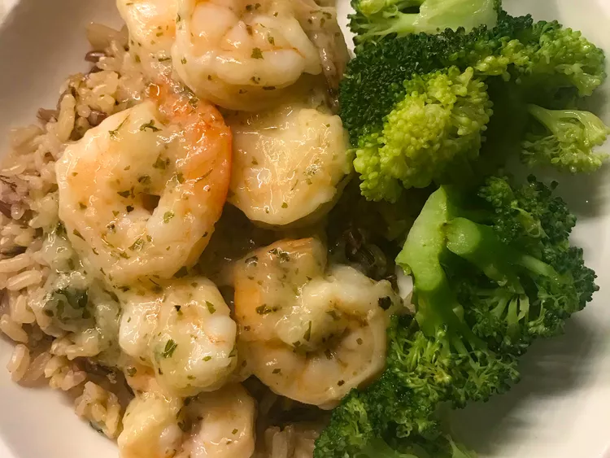

Garlic Butter Shrimp Recipe
Delicious, satisfying, and oh-so-comforting garlic butter shrimp. Serve over rice or pasta.

Ingredients
- ½ cup butter
- 2 pounds frozen medium shrimp
- 2 tablespoons garlic powder, or more to taste
- ¼ cup water
- 2 tablespoons cornstarch
- salt and ground black pepper to taste
Directions
- Melt butter in a large skillet or wok over medium-low heat. Add shrimp; cook and stir until shrimp turn pink, about 5 minutes. Mix in garlic powder.
- Whisk water and cornstarch together in a bowl to make a slurry. Pour into the skillet and stir until butter sauce thickens, 3 to 5 minutes. Season with salt and pepper.
Go back to the homepage